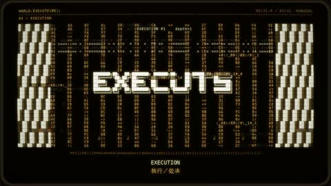

← 案例图谱AI03 / 主要视觉研究样本
GPT6-Astra眼中的world.execute(me)
野生大K · 39.2万播放快照 · ≥10万 · B站原作 ↗
固定圆角终端与琥珀字符统一，后段粉红大字/角色提供局部高潮；视觉变化主要靠字符排列而非新人物美术。

约151.833秒 · 案例代表帧从画面里找依据
这一例先看什么
固定圆角终端与琥珀字符统一，后段粉红大字/角色提供局部高潮；视觉变化主要靠字符排列而非新人物美术。
审美判断
大点阵标题、圆形字符结构和中央对象清楚；细小琥珀字与近黑底的对比偏弱，适合大屏细看，不能以缩略表保证移动端阅读。
迁移到自己的题材
产品功能解释、推理线索、人物关系、搜索与等待、制度压力、人与机器的关系。
教学提问：此刻观众必须读懂哪一条信息？如果所有界面都在动，谁仍然是主角？
带画面的分析单元
图像标出取样时间，对应观察中的关键状态。单帧不能独立证明运动，连续性请结合摘录。表达作用与应用场景是教学解读，复现路线是建议，不是原作者工程还原。
分析单元 01 / 8—24秒
字符画／点阵标题
实际观察
字符格点与大型点阵标题组织画面，文字同时具有信息和材质两种用途。
表达作用（教学解读）
把阅读顺序变成观看顺序；用字重、位置与停留表达强调、犹豫或压迫。
具体应用场景
观点短片、歌词视觉、人物宣言、章节、情绪高潮；先决定哪些词必须读懂，哪些只是纹理。
复现建议（非原作者工程还原）
字形遮罩采样，依灰度或形状放置字符。
直出判断：规则版可程序化；完整美术与源素材需准备。
常见误用：每个字都弹跳、整句停留不足、所有文字同时争主位。严肃叙事里无理由的回弹会削弱重量。
分析单元 02 / 40—56秒
字符曲线／环形结构
实际观察
字符组成曲线和环形空间，重复规则提供秩序。
表达作用（教学解读）
把可控规则变成可见变化；通过不变量、比例和相位建立秩序或空间。
具体应用场景
概念解释、音乐可视化、抽象世界、图表、程序艺术。
复现建议（非原作者工程还原）
沿参数曲线放字符，控制相位、尺度与透视。
直出判断：规则版可程序化；完整美术与源素材需准备。
常见误用：符号无含义；空间复杂度替代概念清晰；将程序生成误等同于文生视频生成。
分析单元 03 / 72—74秒
有限递归终端框
实际观察
内嵌框、日志和中心主体形成向内的空间层次。
表达作用（教学解读）
用规则、选择与反馈组织关系，让抽象状态可被看见。
具体应用场景
人物关系、搜索、等待、推理、产品功能解释、系统压力；数值需要真实含义或明确虚构设定。
复现建议（非原作者工程还原）
有限层复制，缩放、偏移和透明度分层控制。
直出判断：规则版可程序化；完整美术与源素材需准备。
常见误用：假数据制造伪解释；辅助文字太暗；每个窗口同时运动；手机界面只是装饰外壳。
分析单元 04 / 150—152秒
固定标题中的闪色／条纹变形
实际观察
中心EXECUTE与两侧条纹保持主构图，主要是白粉变色、显隐和形变，未按闪烁计切镜。
表达作用（教学解读）
把阅读顺序变成观看顺序；用字重、位置与停留表达强调、犹豫或压迫。
具体应用场景
观点短片、歌词视觉、人物宣言、章节、情绪高潮；先决定哪些词必须读懂，哪些只是纹理。
复现建议（非原作者工程还原）
标题颜色关键帧，字符矩阵位移和条带扭曲分别更新。
直出判断：规则版可程序化；完整美术与源素材需准备。
常见误用：每个字都弹跳、整句停留不足、所有文字同时争主位。严肃叙事里无理由的回弹会削弱重量。
用连续画面核对
保留原研究的多段局部摘录。片段含音轨不代表已听审；本资料不评价音乐卡点或对白节奏。
短时变化怎样理解
150–157秒中心标题和两侧条带持续，亮暗与字符形变组织镜内节奏，不误报高切镜率。
把镜头连接、版式更新、局部图层变化和镜内运动分开记录。所查窗口是下限，不是全片平均或AI／人工排名。
原始逐窗记录 →这次练习的约束
用同一句“正在寻找一个人”做三种状态：有秩序的搜索、遇阻、失控。每版只允许一个主信息区和两层辅助信息。
先写“我希望观众明白／感到什么”，再选本页的一种手法。完成无效果基础版后再加层；解释新增层带来的收益和代价。
打开练习与复盘表 →来源、观看范围与制作归属
实际检查范围：Systematic still sampling and two dense excerpts; not continuous audiovisual viewing.
制作线索：作者简介：让Astra帮忙做的PV
边界：作者说Astra帮助制作，未证明全自动；与图像生成/三维作品路线不同，不用字符稀疏或特效少直接扣分。
播放快照保存时间（UTC）：2026-10-20T10:41:43.393682+00:00。H30制作方式为推定；同源改编、仿作和转载依原记录标注。
原始案例记录 · 选样表把你的判断留下来
笔记仅尝试保存在本机浏览器；浏览器策略可能限制本地文件存储，重要内容请导出。
沿着同一问题继续阅读
 H41
H41漫画、纸张与记忆
漫画人物、照片质感背景和落叶之间的遮挡形成空间。共享活动片头与正文的个人合成劳动要分别观察。
主要样本7个分析单元
 AI05
AI05界面、程序与秩序
全片固定灰白终端骨架、角色对话与右侧图表，后部转红形成情绪分段；统一性强，但整体布局变化少于主参考的全屏字卡/人物大构图。
机制／局限参考7个分析单元
 H19
H19界面、程序与秩序
游戏菜单、选项和相册将动画重新组织成关系叙事。高速窗能证明短裁切执行，但较慢能量段和后记承担不同任务。
主要样本8个分析单元